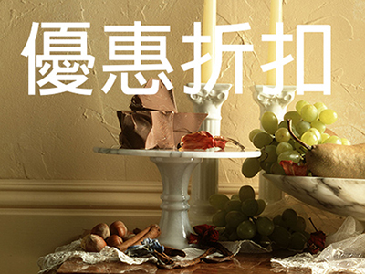

news
電腦族易造成眼睛疲勞

上班族長時間用眼睛看電腦螢幕，結果造成眼睛疲勞。彰化基督教醫院中醫部醫師洪盈蒂表示，從傳統中醫的角度來看，中醫認為，透過穴位按摩，不但可以舒緩眼睛疲勞，也可以達到提神醒腦的效果，促使考生的思緒更為清晰，可按摩穴位包括攢竹穴、百會穴、肩井穴、神門穴等穴位。上班族長時間用眼睛看電腦螢幕，結果造成眼睛疲勞。彰化基督教醫院中醫部醫師洪盈蒂表示，從傳統中醫的角度來看，中醫認為，透過穴位按摩，不但可以舒緩眼睛疲勞，也可以達到提神醒腦的效果，促使考生的思緒更為清晰，可按摩穴位包括攢竹穴、百會穴、肩井穴、神門穴等穴位。
拇指按揉眉頭內側的凹陷處
洪盈蒂醫師舉例指出，攢竹穴位於人的臉部，眉毛內側邊緣凹陷處，也就是當眉頭陷中，眼眶上切跡處。按摩方法很簡單，可利用雙手大拇指指腹，分別按揉左右眉頭內側的凹陷處，其餘四指托住兩側太陽穴，拇指以直線的方式沿者眉毛由眼頭往眼尾按揉，這樣一來，有助於消除眼睛疲勞。洪盈蒂醫師進一步舉例指出，百會穴位在人的頭頂正中央，也就是左右兩耳至頭頂正中的線與眉間中心往上直線的交會點，有一個凹陷處。按摩時可用手指輕輕叩打，有助於促進腦部循環，增強記憶能力；肩井穴位在人的肩膀凹陷處。按摩時可利用食指或中指，透過按揉方式按壓肩井穴。
神門穴位在手腕橫紋內側，約在腕關節凹陷處。按摩時必須以指尖掐按對側的神門穴，掐到穴位會有痠痛感，按揉這個穴位，可幫助寧心安神、改善晚上睡眠的品質。神門穴位在手腕橫紋內側，約在腕關節凹陷處。按摩時必須以指尖掐按對側的神門穴，掐到穴位會有痠痛感，按揉這個穴位，可幫助寧心安神、改善晚上睡眠的品質。神門穴位在手腕橫紋內側，約在腕關節凹陷處。按摩時必須以指尖掐按對側的神門穴，掐到穴位會有痠痛感，按揉這個穴位，可幫助寧心安神、改善晚上睡眠的品質。